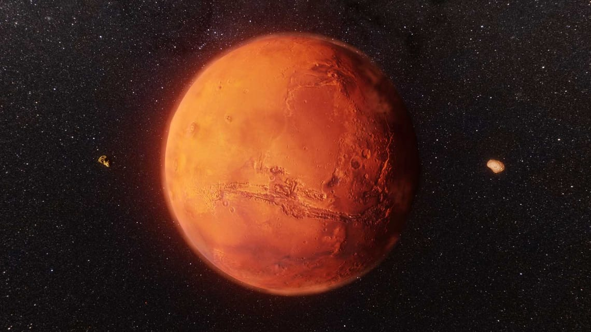

Destination: Mars
Temperature on Mars: -153 degrees Celsius.
Temperature in space: -270 degrees Celsius.
Spaceship Speed: 537 kilometers per second.

Spaceship Material: Titanium and Aluminum.
Fuel: Rocket kerosene, propane, and ethanol.
Speed: 28.000 km/h.
Spaceship has 300 rooms.